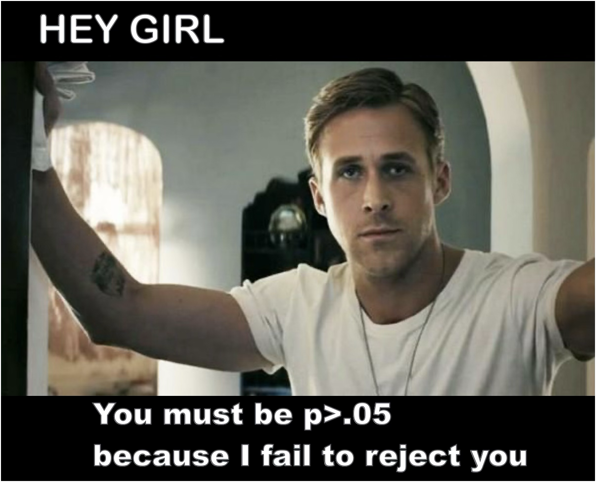
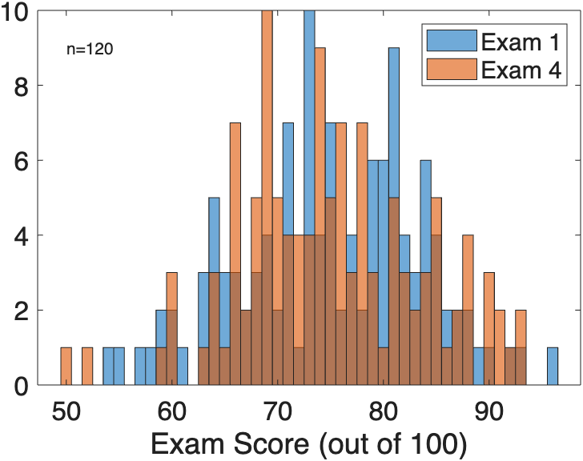
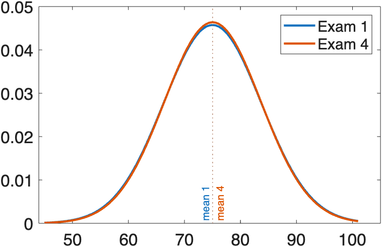
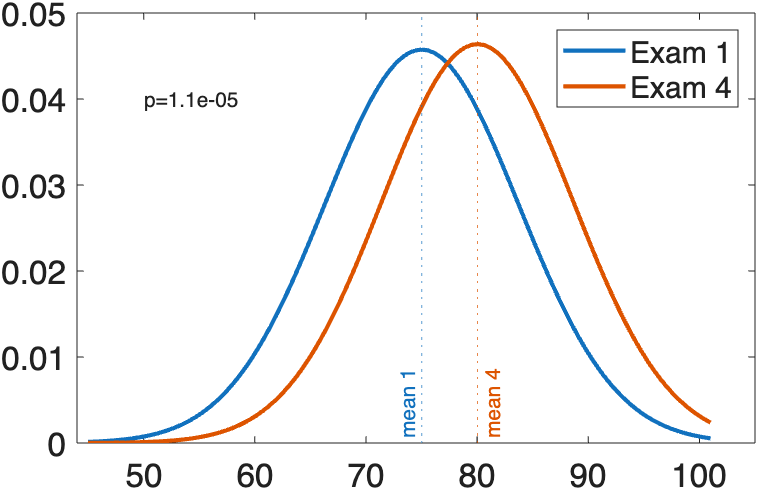
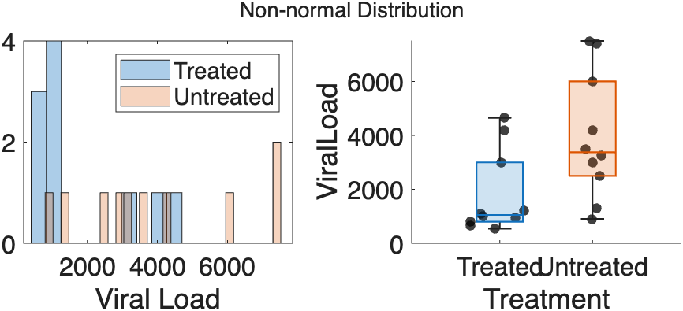

Hypothesis Testing
Overview of Topics Covered
- p-values
- Hypothesis testing for Parametric Data
- Hypothesis testing for Nonparametric data
Statistics do not tell us whether we are right. It tells us the chances of being wrong. When we repeat an experiment, we almost never get exactly the same results. Instead, repeated measurements span a range of values due to biological variability and the precision limits of measuring equipment. But if our measurements are going to be different each time, how do we determine whether a measurement in a given sample is truly different or just randomly different?
Answer: we use statistics. Specifically, we use hypothesis testing to determine how likely two samples are different: it's a probabilities outcome, not a definite YES/NO result.
Hypothesis testing involves making assumptions: either there IS or there IS NOT a statistical difference between the samples. The default assumption assumes no difference—this is the Null Hypothesis. The alternative is the opposite and is called the Alternative Hypothesis. This is usually what you are testing for.
Null vs Alternative Hypothesis
- Null Hypothesis (\(H_o\)): No difference between the two samples being compared
- Alternative Hypothesis (\(H_1\)): There is a difference between the samples
Control vs Experimental Groups
One of the most fundamental experimental designs used with Hypothesis Testing is to compare a control group with an independent group that has been subjected to some intervention. The control group serves as a point of comparison to the independent (or experimental group). For these types of experiments, the Null hypothesis is "There is no difference between the control and experimental group" or "Your elixir didn't do anything — I'm still not the fairest of them all". The Alternative Hypothesis is that there is a difference between the groups.
p-values
To decide whether to accept the Null or Aternative Hypothesis, you create a probability cut-off or p-value(1).
- or "Alpha Level of Significance" if you're a stats book.
The most common p-value used is 0.05, or 5%. With a 0.05 p-value, we assume two samples are just random variations from the same population (Null Hypothesis), unless that variation would only happen in 5% of the cases or fewer. If the calculated p-value of the sample difference is smaller than 0.05, then we reject the Null Hypothesis and accept the Alternative Hypothesis. If we accept the Alternative Hypothesis, we also accept the possibility that we may be wrong in 5% of the cases. That is, the probability that the samples are the same is roughly 5% (or lower), even though we rejected the Null Hypothesis.

Correcting p-values
If you are thinking that 5% is actually not that unlikely, then you would be right. Five out of a hundred times is also one out of twenty times and that happens more often than you would think. If you are doing a lot of hypotheses testing, then you may need to adjust your p-value to take this into consideration. For example, if you are testing twenty different things using a 0.05 p-value, one of things you are testing may just randomly fall below the p-value criteria because thats how randomness works. There are many ways to adjust the p-value depending on the number of sample comparisons, including the Bonferonni correction or the False Discovery Rate. Talk to a Doctor if you feel you need to correct your p-value.
The dark side of the p-value
The danger with p-values is the temptation to use a seductively low p-value as definitive proof of the alternative hypothesis. The p-value doesn't actually do that. Imagine that you have a coin that you suspect is weighted toward heads. Your null hypothesis is that the coin is fair. You flip it 100 times and get more heads than tails. The p-value won’t tell you whether the coin is fair, but it will tell you the probability that you’d get at least as many heads as you did if the coin was fair. That’s it — nothing more. Believing that a low p-value definitively tells you that the coin is unfair is known as the prosecutor's fallacy. (1)
And remember, this whole process is based on making assumptions. If your hypothesis was pretty unlikely to start with, getting a p-value of 0.05 or even 0.01, doesn't necessarily prove the hypothesis (e.g. covid vaccination is ineffective), it simply reports the probabilities of getting the results that you got, and that perhaps your hypothesis deserves another look. (1)
The Prosecutor's Fallacy
The danger of hypothesis testing is sometimes you can get really low p-values, even when the real effect has a very low probability. Say you want to test the effectiveness of the COVID-19 vaccine. One way to test its effectiveness might be to simply compare the number of vaccinated and unvaccinated people who are hospitalized with COVID-19. Using hypothesis testing, you likely will find a significantly larger number of people who were vaccinated and hospitalized. Based on this result, and a low p-value, you may be tempted to conclude that the vaccine is ineffective and somehow makes you more susceptive to being hospitalized. However, as the diagram below illustrates, this fails to take into consideration the large difference in the total number of people who are vaccinated vs those who are unvaccinated. In this exaggerated example, we have far more vaccinated people (in pink) vs unvaccinated people (in green): 100 to 10. So, 10 times more people are vaccinated than unvaccinated. Since there are so few unvaccinated people, even if a high percentage of these people get sick, you still get a small number of people. In this example, 50% of the 10 unvaccinated people got hospitalized, so you get 5 people hospitalized. By comparison, since the number of vaccinated people is much higher, even a small percentage of this populate will result in a larger number. In this example, just 10% of the vaccinated people were hospitalized, which is 10 people — twice as many as the unvaccinated people who were hospitalized. So, even though its a much smaller percentage of the total population, you get twice as many vaccinated people than unvaccinated people hospitalized in this exaggerated example. The reality was more subtle than this, but still striking. We know the vaccine effectiveness range is roughly 90-95%, meaning if 100 unvaccinated people get hospitalized, 5 vaccinated people would be hospitalized. Considering the larger percentage of people who got vaccinated during the pandemic (in the 80% range), it was highly probable there would be more vaccinated than unvaccinated people that were hospitalized (and this actually happened). Again, it is simply a numbers game.

Adapted from: Base Rate Fallacy with Vaccines
{kind=link}
Hypothesis Testing in MATLAB
Hypothesis testing isn't always just testing whether samples are different. You can also test if samples are normally distributed or if the samples have equal variance. MATLAB has many different functions that perform different types of hypothesis testing, including:
adtest- Anderson Darling test for normalityvartest2- F-test for equal variancettest2- Two Sample t-test
While the inputs vary, the outputs from all these functions (at least the first 2 outputs), take the following form:
- h: a boolean. If 1, then the test rejects then null hypothesis.
- p: The p-value. p-values range from 0 to 1. Less than 0.05 is often considered significantly different.
You can find the Null Hypothesis in the MATLAB documentation, but sometimes its a little confusing.
Testing Normal Data
aka Parametric Testing
A common hypothesis test for normally-distributed data is the Student's t-test, a test originally devised to ensure Guinness beer stayed delicious. Because t-tests rely on the data having a probability distribution that can be mathematically modeled, like a Normal Curve, this type of testing is also called a Parametric Test.
Key Characteristics of a Parametric test
- They assume a normal distribution and equal variance for the data.
- They are best used when the sample size is greater than 30
- They are very powerful when used correctly
The t-test assumes that the data comes from a population having both a Normal Distribution and Equal Variance (same variance for both samples). So, before performing a t-test, you should test your samples for these properties.
For this example, we will use fake test scores that are included with MATLAB. From this dataset, we will test the following hypotheses:
- Null Hypothesis: Exam Scores 1 and 4 are not significantly different (i.e. the same)
- Alternative Hypothesis: Exam scores 1 and 4 are significantly different
| Load example data and plot as histogram | |
|---|---|

Loading the
examgrades.matfile returns a numeric 120X5 matrix as the variablegrades. This matrix contains exam scores ranging from 0 to 100. The scores for a given exam are organized by column, so column 1 contains Exam 1 scores, column 2 contains Exam 2 scores, etc. There are 5 different exams (columns) and 120 students (rows). Plotted here is a histogram of the scores from Exam 1 (blue) and 4 (orange). The distribution of scores appears to be normal for both exams.
Testing for Normality
Eyeballing the histograms, it looks like the data is normally distributed. But in an official report, you probably want a more officious way to state the data was normal. Fortunately, there are several different tests you can use.
To test if your samples have a normal distribution, you can use the Anderson Darling test with the MATLAB function adtest(1).
- There are other tests for normality. This is just one that comes with MATLAB.
As indicated in the documentation, adtest uses the following hypotheses:
- Null Hypothesis: the data comes from a population with normal distribution
- Alternative Hypothesis: the data does not come from a population with a normal distribution.
In the following example, we test the Exam 1 and Exam 4 scores for normality.
| Testing for Normality using the Anderson Darling test | |
|---|---|
…Since h1=0 and p1 > 0.05, you fail to reject the Null Hypothesis for x1 (Exam 1), meaning you accept the alternative hypothesis that the Exam 1 grades have a normal distribution and you can use them in a t-test. We get the same result for x4, the Exam 4 grades. So, the samples are normal. On to the next step.
Testing for Equal Variance
In addition to having a normal distribution, your data should also have equal variance for t-tests. To test for equal variance, you can use vartest2. As in the adtest, the Null Hypothesis is that the samples have Equal Variance.
As you can see The syntax is similar, except that you plug both x and y into the function call:
| Testing for Equal Variance using an F-test | |
|---|---|
…Again, since hv=0 and pv > 0.05, we fail to reject the null hypothesis, meaning the Exam Scores have equal variance and can be used in a t-test.
t-testing
Finally, having confirmed Normality and Equal Variance, we are ready to perform our t-test. In this example, we have two samples, so we will use the two-sample t-test function ttest2.
Hypotheses for the two-sample t-test:
- Null Hypothesis: the two samples have the same mean
- Alternative Hypothesis: the two samples have significantly different means.
As you can see below, the syntax is very similar to the other tests, although here we add a couple of extra optional outputs:
| Testing if samples are significant different using a t-test | |
|---|---|
h =
0
p =
0.98218
ci = 2×1
-2.2277
2.1777
stats = struct with fields:
tstat: -0.022359
df: 238
sd: 8.6609
…Here, h=0 and p > 0.05 means that x1 and x4 are likely samples with the same means, meaning that Exam 1 and Exam 4 are not significantly different. ci indicates the 95% confidence interval, while the stats structure includes details about the t-test for the stats nerds in the audience. You also use this information when you report the results (see below)
If we review the normal curves used for the t-tests, we can see they are virtually identical, which is why the t-test calculated such a high p-value and failed to reject the Null Hypothesis.

Normal curves fitted to the histograms of Exam scores are nearly identical. Mean of Exam 1 = 75±8.7, Mean of Exam 4 = 75±8.6. , we in fact see that they are very similar.
Code to create Normal Curve Plots in the figure above
If we curve Exam 4 by adding 5 points to all scores, we get a significantly different outcome with the t-test:
| t-test of Exam 1 vs curved Exam 4 | |
|---|---|
h =
1
p =
1.0908e-05
ci = 2×1
-7.2277
-2.8223
stats = struct with fields:
tstat: -4.4941
df: 238
sd: 8.6609

Normal Curves of Exam 1 and modified Exam 4 Now the Exam Scores are significantly different with the mean of the modified Exam 4 equal to
80±8.6and the p-value calculated by the t-test to be a really smallp=0.000011.
Code to curve Exam 4 grades, refit data, and replot
When you report the results of a t-test, you typically report the mean, the standard deviation and the outcome of the test, as follows:
| Formatting the report | |
|---|---|
Modified Exam 4 scores were significantly higher than Exam 1 scores, 75.01 ± 8.72" vs 80.03 ± 8.60" (M±SD), respectively, t(238) = -4.49, p < .0001.
…Notice that we include data from the stats variable as part of the reported t-test outcome.
How to properly report a t-test in APA style.
Testing Non-normal data
aka Nonparametric Testing
Ok, so what if your data is not Normal? What if you have a small sample size with a bit of a skew. Nonparametric means that mathematically modeling is not used to generate the statistics.
Consider the following made-up data:
| Create Non-normal Data and plot | |
|---|---|
Here, we have a value called "Viral Load" and two categories: "Treated" and "Untreated". Importantly, there are only 10 data points per group (n=20). So, this is a rather underpowered study (sample size smaller than 30). Presumably a high viral load would be bad, but again, this is all made up. If we plot our data, we get distribution patterns as follows:

Distribution of Viral Load. The histogram for both samples indicates a non-normal distribution of the data. In the box plots, the median value is not centered inside the interquartile range box—it's closer to 25th . This offset indicates that the data is skewed.
Code to generate above plots
If we test if data is Normally distributed using the adtest:
| Test data for Normalacy | |
|---|---|
…Since p<.05, the data is not normal and you should use a non-parametric test, like the Mann-Whitney U test…
Mann-Whitney U Test
Equivalent to a t-test, but for non-normal data
If your data is not normal, but you still want to know if your samples are statistically different, then you run a Mann-Whitney U Test (also known as a rank sum test). The Mann-Whitney test doesn't have all the bells and whistles of a t-test, but it can get the job done in a pinch.
Key assumptions for a Mann-Whitney U Test
- This test is based on ranking observations, so the variable being compared between the two groups must be continuous (e.g., age, weight, height, heart rate).
- The data are assumed to have a non-Normal or skewed distribution.
- While normality is not assumed, the data in both groups should have a similar shape (distribution).
- The data should come from two randomly selected independent samples (no relationship between groups). If samples are paired (e.g., repeated measures from the same participants), use a paired samples t-test.
- Each group should have a sufficient sample size, typically more than 5 observations per group.
The function for a Mann Whitney is called ranksum. The syntax is as follows:
| Mann Whitney U-test of Treated vs Untreated Viral Loads | |
|---|---|
…Since p<0.05, then we reject the Null Hypothesis and accept the Alternative Hypothesis that groups are different.
When you report results using a Non-parametric test, you should report the median and interquartile range of values (instead of the mean and standard deviation). Something like the following:
The treated group had a significantly lower viral load than the untreated group,
median=1050.00 vs 3375.00, respectively, as indicated by a Mann-Whitney U-test, U(Nleft=10, Nright=10)=75.50,z=-2.19, p=0.028.
You can find an example on how to report the results from Mann-Whitney U tests here.